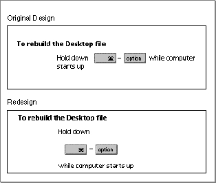

Legacy Document
Important: The information in this document is obsolete and should not be used for new development.
Important: The information in this document is obsolete and should not be used for new development.


Designing for Localization
By planning for localization as you design your guide file, you can more readily prepare your software for worldwide markets. In general, localization issues revolve around planning for
For specific information on various cultural values and localization principles, see the Macintosh Human Interface Guidelines. This section discusses issues you should take into account as you design your panels and implement features of your guide file.
- cultural differences (such as the cultural significance of the images that you use for graphics or three-dimensional buttons)
- text that expands when translated to other languages
- specific elements (such as dialog items or folders) whose location or name changes based on the script in use
Planning for Expanded Text
When writing your text, consider that U.S. English text can become up to 50 percent longer when translated into another language. Because you want your panels to remain small and easy to read, keep your panel text as terse as possible. To avoid expanded text overflowing onto graphics, use relative rather than absolute positioning when placing objects or graphics on a panel. (Remember that, by default, Apple Guide wraps the text around graphics and objects for you.)Translations for Apple Guide Phrases
Once you design a guide file, part of the localization process involves translating all the text in your help content. This includes text in panels, text in radio buttons and checkboxes, topic areas and topics, and index terms. Guide Maker provides a Localize utility to help you with this process. For information on using the Localize utility, see the chapter "Localizing Your Guide File." For information on specific Guide Script commands, see the chapter "Guide Script Command Reference."Part of localizing your content for a specific region includes localizing tags and button text. Table 2-4 shows common translations for Oops, Huh?, Tip, and Do This.
Table 2-4 Common translations of Apple Guide terms
Formats
Specify font information using <Define Format> commands rather than embedding font and style information within your source files. When you export and merge text strings (using Guide Maker's Localize utility) all style information is lost and any style information directly specified in the source file must be reapplied.In general, try to use a small number of formats, such as Tag, Body, and Full. Using a large number of formats in a panel typically requires that the localizer readjust the formats to fit expanded text.
Avoid using multiple tags (for example, two Do This tags) on a panel. Using multiple tags often requires that the localizer line up the translated body text with the tags.
Graphics and Buttons
Always use relative positioning of graphics, checkboxes, and buttons on panels; otherwise, translated text can expand and overflow the object.Do not embed pictures inside a line of text, because if the text grows during localization, you will have to adjust the placement of the pictures. Figure 2-62 shows an example of a graphic with embedded text that was redesigned for better localization.
Figure 2-62 Avoiding embedding pictures inside of text

Sequence Display Titles
When defining a sequence with the <Define Sequence> command, you must specify the optional second parameter. If you don't, Guide Maker's Localize utility won't extract the text string of the sequence display title (and your localized panels will have the same sequence display title as your original panels).Coachmarks
Give your coachmarks meaningful names and include comments in the source file describing the object being coached. When defining item coachmarks in dialog boxes, use theDialogIDfunction rather than specifying a fixed rectangle coordinate because the item's location might change if the dialog box is localized.Context Checks
When using the <Define Context Check> command, always define strings that need to be translated as having the data typeLPSTRING, notPSTRING. Guide Maker's Localize utility extracts strings that are specified by the typeLPSTRINGbut not strings specified by the typePSTRING. Don't hard code any strings in external code modules. Instead, specify the string (with data typeLPSTRING) in the <Define Context Check> command line.AppleScript
When writing scripts (for use with AppleScript or other scripting languages) that reference special folders (such as the System Folder, Extensions, or Control Panels), you don't need to use a path reference to the folder name. Instead, use the built-in folder constants (extensions folder,control panels folder, orsystem folder). See the AppleScript Finder Guide for more information on these and other folder names.